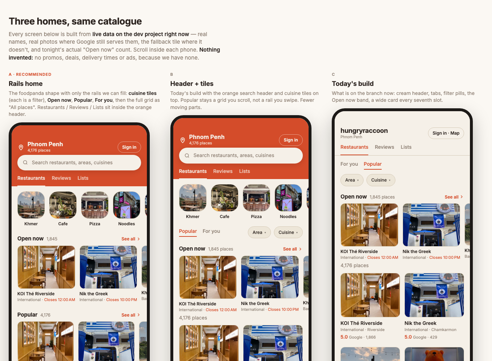

A little taste of what’s coming. The app isn’t available to download yet.
Phnom Penh, Cambodia For wherever hunger takes you.
Something good is around the corner.
9:41

Earlier app preview · September 2026
Big appetite. Small screen.
Neighbourhood favouritesCreate ListsPhnom Penh on a plateNeighbourhood favouritesCreate ListsPhnom Penh on a plateNeighbourhood favouritesCreate ListsPhnom Penh on a plate
Neighbourhood favouritesCreate ListsPhnom Penh on a plateNeighbourhood favouritesCreate ListsPhnom Penh on a plateNeighbourhood favouritesCreate ListsPhnom Penh on a plate
Less searching. More “let’s go.”
For the everyday question that somehow never gets easier: where should we eat?
Find your kind of place.
Browse restaurants, cafés and bars across Phnom Penh. Search by name, narrow it down by area, or follow a craving.
KhmerNoodlesCaféPizza
Know before you go.
Check opening times, the address and the details that matter. Find what’s open, then get directions straight to the door.
Open now Opening-hours preview
A little more your taste.
Choose the cuisines you love. Your feed puts those places first, with room to discover something you haven’t tried.
Your tastes. Your next favourite.
Good finds are better shared.
We’re starting with discovery. Here’s what’s on the menu next.
Planned
Remember the good ones.
Rate the places you’ve tried and build a picture of what you love. Less trying to remember the name. More going back.
Planned
Your list. Their next meal.
The noodle spots you swear by. Your coffee circuit. A few favourites for a friend visiting town. Keep them together in a list you can share.
The “you have to try this” listA few favourites, all in one place.
See you at your next favourite.
HungryRaccoon is still in the making. We’re getting ready for hungry people in Phnom Penh. No launch date just yet. Good things take a little simmering.